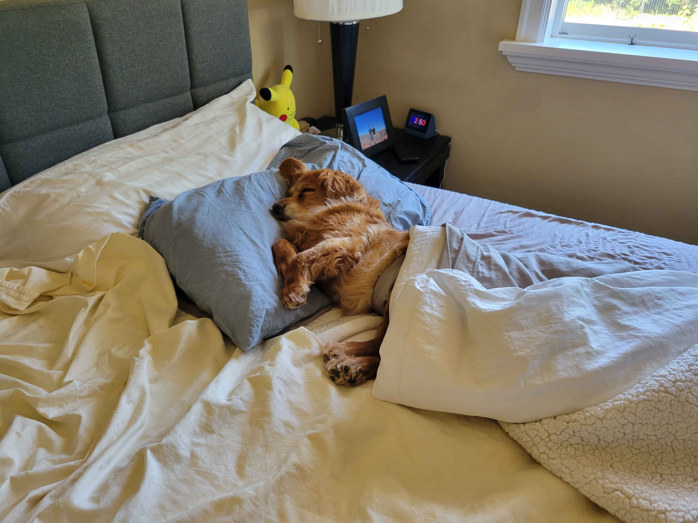

Hello I am Leo Nguyen
Here is my name but smaller: Leo Nguyen
Here is my name but even smaller: Leo Nguyen
Here is my name but super small: Leo Nguyen
About Me
I am an Applied Computing major at UWB, with my minor degree being in Cybersecurity. I have a pet dog, and a younger brother who is also taking Applied Computing at UWB

Interests
How I was raised has influenced a lot of the interests I have today. Technology and games were a big part of my childhood, and my parents always lectured to me about the various things in life that I ought to be successful in. Here are some things I am interested in at the moment, in no particular order:
- Video games
- Computers/Technology
- Health and fitness
- Investing
- Information Technology/Cybersecurity
Hobbies
Obviously, my hobbies will stem from my interests. Here are some hobbies I have participated in, ordered from most particpated in to least:
- Gaming
- Calisthenics
- Weightlifting
- Building computers
- Building custom mechanical keyboards
- High-fidelity audio
- Running
PC Build Showcase
Building my own custom PC has been a childhood dream of mine, and recently I was able to accomplish that. Fitting
all the parts into a relatively small chassis was a challenge, but I'm pretty proud of the build.
Click here to check out my PC build!